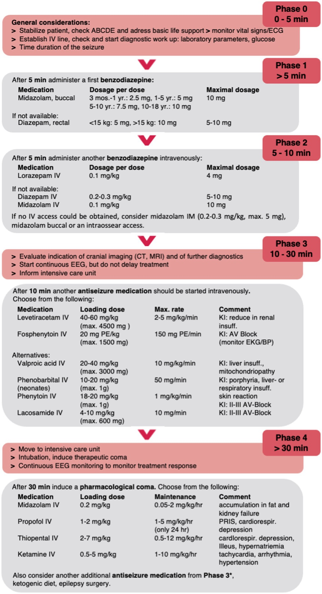

Prova, fecho e escada final
Fecho Cláudio · Q 8a/7 min · Q vias · one-pager · ponte febril
✅ Fecho do caso Cláudio
40 minutos de crise tônico-clônica, já estabilizado clinicamente — medicamento inicial = benzodiazepínico (ex.: diazepam venoso).
1. Questão: criança 8 anos, TCG ~7 minutos
Criança de 8 anos chega ao PA em crise TCG há aproximadamente 7 minutos. 7 minutos = mais de 5 minutos → já está em status operacional → tem que tratar. Ainda com atividade convulsiva; sem história prévia de epilepsia conhecida; sinais vitais estáveis.
Primeira intervenção: benzodiazepínico — única resposta possível como 1º. Fenitoína seria a segunda; ácido valproico seria a segunda; o terceiro degrau (anestesia) não é o imediato. O mais importante imediato: tirar da crise.
2. Questão: menino 3 anos — medicação e via
Menino de 3 anos, previamente hígido, admitido convulsionando. História de tosse, coriza e febre há 1 dia. Exame: FC 154, FR 38, T axilar 36,1 °C, SpO₂ 96%; ar responsivo; pupilas isocóricas e fotorreagentes; movimentos tônico-clônicos.
A questão pede a medicação e a via. Tempo de crise não foi explicitado, mas o enunciado já pede para tirar da crise — resposta = benzodiazepínico.
Opções corretas de via: diazepam EV ou retal ou midazolam EV / IM / spray nasal. Não marcar diazepam intramuscular. Não marcar midazolam como "inalatório" — o correto é spray nasal (absorção capilar).
| Vinheta | Quer agora | Não marcar |
|---|---|---|
| 8 a · TCG 7 min · SV ok | Benzo 1º | PHT/VPA como 1º; anestesia de cara |
| 3 a em crise · vias | DZP EV/retal ou MDZ EV/IM/nasal | DZP IM; MDZ "inalatório" |
| Cláudio 40′ estabilizado | Benzo (ex. DZP IV) | Só repor AED oral |
3. Escada one-pager
7 min reativa 5 age (P2). Vias reativam matriz DZP/MDZ (P5). "PHT/VPA = 2ª" reativa escada (P7–P9).

Integra a estação inteira em formato de banca.
Cláudio 40′ → benzo. Criança 7′ TCG → benzo (não PHT/VPA como 1º). Vias: DZP EV/retal ou MDZ EV/IM/nasal; não DZP IM; não "inalatório". Próximo bloco natural da série: crise febril.